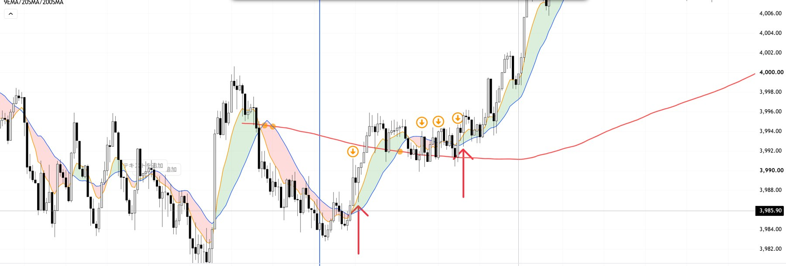

● 1分足のトレンド転換（下落→上昇）
イマニエル方式（200の線の向きと、20の線の束）で、下げから上げに変わる所を考えるページです。例を集めながら、あとから足していきます。画像を押すと、大きく見られます。
← 手法のまとめにもどる例1で見えた流れ
10/26の例では、3つの段階で進んだ。入ったのは、3番目。
これは、1回の例です。下げから上げに変わる形は、ほかにもあります。例を集めながら、あとから足していきます。
入る前に見ること 例1から見えたこと。例が増えたら、見直す。
- 200の線の傾き。 急に下がっているなら、反発は見送る。緩やかになって、横ばいに近づいているなら、流れが変わり始めている。
- 価格が200の近くで、押さえつけられていないか。 終値が、200の下で確定していない。一度でも押さえつけられたら、反発は終わりかもしれない。
- 陽線が、実体の長いまま、続いているか。 3本続いて、どれも実体が長いなら、買いの勢いが強い。
- 9と20の線が、上に開いているか。 右のチャートで、9が20を上に抜けて、緑の帯が出ている。
- 損切りと追加を、先に決める。 損切りは、200のすぐ下。追加は、上に抜けた所で、長い陽線が出てから。
例1：10/26 うまくいった例
底で反発 → 200の近くで束 → 200の上で押して、約$17上昇。

流れ
- 左の矢印（底）：9が20を上に抜けて、反発が始まった。ただ、200はまだ下向きで、価格は約$7下にいた。
- その間（約40分）：価格が200の周りを行ったり来たりした。9と20が何度も入れ替わって、束になった。200は横ばいに近づいた。
- 右の矢印：200の近くまで押して、下には抜けず、そこから大きい陽線が続いた。9と20が一気に開いて、200も上向きになった。約3,991 → 4,008。
自分の判断（言葉にしたもの）
最初の入り
- 陽線が3本続いて、実体が明らかに長い。買いの勢いが強い。
- 200に近いが、まだ一度も押さえつけられていない。だから、200の近くで入る。
- 今回は、200に反発されずに、200の上に乗った。
- 損切りは、200のすぐ下。
追加の入り
- 次に、かなり長い陽線が出て、買いの勢いを感じた。
- 上に抜けていく所で、追加で入る。
200の傾きについて
- 200の下げは、緩やかだった。流れが収まってきていると見てよい。
気をつけること・まだ決めていないこと
気をつけること
- 200が下向きの間は、反発がだましになることがある。「まだ押さえつけられていない」は、これから押さえつけられるかもしれない、ということでもある。
- 束の間は、ヒゲで200の下まで何度も触れる。損切りを近くに置きすぎると、ヒゲで拾われやすい。
- 追加で入る時は、最初の損切りを建値あたりまで上げて、全体の損失が許容額（$200〜300）に収まるかを確認する。
- スタイル1の「200に近い所では入らない」と、食い違う。200の近くで、200の反応を見て入るのは、「イマニエル方式」と分けて考える。
まだ決めていないこと
- 200の傾きが「緩やか」とは、どのくらいか（数字にするには、例が足りない）。
- 押さえつけられて、失敗した例を、集める。
- 「束が完成した」とは、どの状態か。
参考：11/5 夕方（左だけ見てロングして、損切り）
200が、はっきり下向きだった。右の200SMAに、2回押さえつけられた。